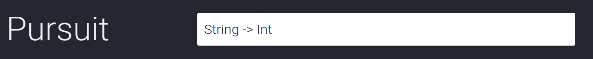

A Working Stiff's Guide to
PureScript
Nicholas Kariniemi & Antti Holvikari
What are we doing here?
Learning PureScript
Trying PureScript
Time: 2.5 hours (short!)
Goal #1: Little talking, much coding
Goal #2: Learn basics of language and tools
Goal #3: Get a taste of web dev with PureScript
The Plan
Time: 2.5 hours
- Introduction to PureScript
- Talk: PureScript concepts, exercise intro
- Code: Exercise
- Talk: Exercise recap
- Call 2 (recursively). Repeat until done or out of time.
- Wrap-up and feedback
What is PureScript?
strongly-typed
purely functional
strict
compiles to "readable" JavaScript
no runtime
Why PureScript?
Functional programming at its best:
immutability
functional data transformations
strong types
Small core of broadly applicable ideas
Works well with JavaScript (both directions)
Trickle-down effect
Basic types
Basic types: Primitives
$ cd exercise1
$ npm run repl
> import Prelude
> :type 1.0
Number
> :type 1
Int
> :type true
Boolean
> :type "test"
String
> :type 'a'
Char
Basic types: Arrays
> :type [1, 2, 3]
Array Int
> :type [true, false]
Array Boolean
> :type [1, false]
Could not match type Int with Boolean.
myList :: Array Int
myList = [1, 2, 3, 4]
colors :: Array String
colors = ["red", "orange", "yellow", "green"]
Arrays always contain only a single type
(they're homogenous)
Basic types: Records
-- A record
user :: { name :: String, id :: Int }
user = {name: "Joe", id: 1}
-- Accessing a field
log user.name
-- Setting name to "Jane"
user {name = "Jane"}
Records ~= JavaScript objects
Type synonyms
type User = { name :: String, id :: Int }
type Address =
{ street :: String
, city :: String
, state :: String
}
type AddressBook = Array Address
type UserId = String
type Log = Array String
Functions
Some functions
add :: Int -> Int -> Int
add x y = x + y
noEnergy :: Creep -> Boolean
noEnergy creep = C.amtCarrying creep resource_energy == 0
findProduct :: ProductId -> ProductDirectory -> Maybe Product
findProduct id directory = -- body omitted
loadConfig :: FilePath -> Aff _ (Either (NonEmptyList Error) Config)
loadConfig cfgFile = do
-- body omitted
-- Calling functions:
add 1 2
noEnergy creep
findProduct id dir
loadConfig path
Functions are curried
sum :: Int -> Int -> Int
sum x y = x + y
-- Equivalent:
sum 1 3
(sum 1) 3
addTwo :: Int -> Int
addTwo = sum 2
-- addTwo 6
-- 8
-- Common pattern: dropping the last parameters
expiredSessions :: Array Session -> Array Session
expiredSessions arr = filter isExpired arr
-- can be shortened to
expiredSessions :: Array Session -> Array Session
expiredSessions = filter isExpired
Functions can take generic parameters
-- Works for any type of values in the array
length :: forall a. Array a -> Int
-- Works for many types of containers,
length :: forall a b f. Foldable f => Semiring b => f a -> b
map :: forall a b f. Functor f => (a -> b) -> f a -> f b
Anonymous functions
\user -> user.name
\id -> id == "teh_id"
val = Array.filter (\id -> id == "teh_id") ["an_id", "teh_id", "other_id"]
The Dollar Sign: $
"everything after goes in parentheses"
-- These are equivalent:
main = log $ "User: " <> "Foo"
main = log ("User: " <> "Foo")
-- These are equivalent:
main = log $ "User: " <> show $ 1 + 5
main = log ("User: " <> show (1 + 5))
(<> is for appending)
Libraries and the Prelude
Everything is in small libraries
| What | Package | Module to import |
|---|---|---|
| Basic functions and types | purescript-prelude | Prelude |
| Array functions | purescript-arrays | Data.Array |
| List functions | purescript-lists | Data.List |
| Record functions | purescript-record | Data.Record |
| Tuples | purescript-tuples | Data.Tuple |
| The stuff you thought would be in one of ^ | purescript-foldable-traversable | Data.Foldable |
| Maybe ("option type") | purescript-maybe | Data.Maybe |
| Either ("result type") | purescript-either | Data.Either |
Libraries are in psc-package and/or Bower
Library documentation is on Pursuit
Pursuit
- Your most important friend
- One-stop shop for library documentation
- Also links to source code
- Bind it to a keyword search e.g. `pu`
- Firefox: right-click on search box -> "Add a Keyword for this Search"
- Chrome: search on Pursuit, then try enter 'pursuit[TAB]' in omnibar
- The answer to everything is "Search Pursuit"
- What's in the "purescript-arrays" package? -> "pu arrays"
- What's in the "Data.Array" module? -> "pu Data.Array"
- What type does function `filter` have? -> "pu filter"
- What's a function with this type? -> "pu Array a -> Int"
How to cheat in PureScript
- Just leave the type off (for top level definitions)
- Type holes or how to make the compiler do your work
- Typed search or how to make Pursuit do your work
Leaving the type off
Code:
doThing a b = "Doin my thing with " <> a <> ", " <> b
Compiler:
Warning 4 of 6:
in module Main
at src/Main.purs line 892, column 1 - line 892, column 54
No type declaration was provided for the top-level declaration of doThing.
It is good practice to provide type declarations as a form of documentation.
The inferred type of doThing was:
String -> String -> String
in value declaration doThing
Type holes: Ask the compiler
Code:
sumOfList :: Int
sumOfList = ?sumThemThings [1, 2, 3, 4]
Compiler:
Error found:
in module Main
at src/Main.purs line 893, column 13 - line 893, column 27
Hole 'sumThemThings' has the inferred type
Array Int -> Int
You could substitute the hole with one of these values:
Data.Array.length :: forall a. Array a -> Int
Data.Foldable.length :: forall a b f. Foldable f => Semiring b => f a -> b
Data.Foldable.product :: forall a f. Foldable f => Semiring a => f a -> a
Data.Foldable.sum :: forall a f. Foldable f => Semiring a => f a -> a
Data.Semiring.one :: forall a. Semiring a => a
Data.Semiring.zero :: forall a. Semiring a => a
Unsafe.Coerce.unsafeCoerce :: forall a b. a -> b
in value declaration sumOfList
Type search: Ask Pursuit

Exercise #1: Types, Functions, and Hacker News
Pattern matching and ADTs
Pattern matching: functions
gcd :: Int -> Int -> Int
gcd n 0 = n
gcd 0 m = m
gcd n m = if n > m
then gcd (n - m) m
else gcd n (m - n)
-- With guards:
gcd :: Int -> Int -> Int
gcd n 0 = n
gcd 0 n = n
gcd n m | n > m = gcd (n - m) m
| otherwise = gcd n (m - n)
Pattern matching: arrays
isEmpty :: forall a. Array a -> Boolean
isEmpty [] = true
isEmpty _ = false
takeFive :: Array Int -> Int
takeFive [0, 1, a, b, _] = a * b
takeFive _ = 0
Pattern matching: records
showPerson :: { first :: String, last :: String } -> String
showPerson { first: x, last: y } = y <> ", " <> x
showPerson :: { first :: String, last :: String } -> String
showPerson { first, last } = first <> ", " <> last
-- This is equivalent to
showPerson :: { first :: String, last :: String } -> String
showPerson { first: first, last: last } = first <> ", " <> last
Pattern matching: case
isEmpty :: forall a. Array a -> Boolean
isEmpty [] = true
isEmpty _ = false
-- Or equivalently:
isEmpty :: forall a. Array a -> Boolean
isEmpty arr = case arr of
[] -> true
_ -> false
Algebraic Data Types
-- v--type
data Filter = ByTitle | ByDate | ByRelevance
-- ^ data constructors
-- v-- function takes in type Filter
applyFilter :: forall a. Filter -> Array a -> Array a
applyFilter ByTitle =
applyFilter ByDate =
applyFilter ByRelevance =
-- ^ but you can pattern-match on the data constructor
ADTs with data
data Shape
= Circle Point Number
| Rectangle Point Number Number
| Line Point Point
| Text Point String
draw :: Shape -> Drawing
draw (Circle pt radius) =
draw (Rectangle pt width height) =
draw (Line startPt endPt) =
draw (Text pt text) =
Common ADTs: Maybe and Either
data Maybe a = Nothing | Just a
data Either a b = Left a | Right b
show :: Maybe User -> String
show (Just user) = user.firstName <> user.lastName
show Nothing = "No user!"
decodeJSON :: String -> Either ValidationErrors User
show :: Either ValidationErrors User -> String
show (Right user) = user.firstName <> user.lastName
show (Left errors) = "Errors: " <> show errors
Newtype
For ADTs with one constructor that takes one type
At run time is same as underlying type
newtype PhoneNumber = PhoneNumber String
newtype UserId = UserId Int
-- ~equivalent to this, except at run time
data PhoneNumber = PhoneNumber String
data UserId = UserId Int
Exercise #2: Pattern matching and ADTs
Working with JavaScript
Working with JavaScript
- PureScript is strict (unlike Haskell)
- PureScript has no runtime (unlike Elm, ClojureScript, GHCJS)
- Calling JavaScript from PureScript is easy
- Calling PureScript from JavaScript is easy
- Wrapping JavaScript safely requires some thought
Example: calling JavaScript from PureScript
-- Main.purs (PureScript)
foreign import pow :: Number -> Number -> Number
// Main.js (JavaScript)
exports.pow = function(x) {
return function(y) {
return Math.pow(x, y)
}
}
Example: using JS YAML parser from PureScript
# Install JS dependency
npm install --save js-yaml
-- PureScript
module Kubernetes.Yaml where
foreign import safeLoadImpl ::
forall e. String -> Eff (exception :: EXCEPTION | e) Foreign
data YamlError = YamlError Error
safeLoad :: String -> Either (NonEmptyList YamlError) Foreign
safeLoad str = runPure $ do
loaded <- try (safeLoadImpl str)
pure (bimap (pure <<< YamlError) id loaded)
// JavaScript
exports.safeLoadImpl = function(str){
return function(){
const yaml = require('js-yaml')
return yaml.safeLoad(str)
}
}
Example: calling PureScript from JavaScript
-- PureScript
module FancyComponent where
toReact :: forall props. State -> Eff _ (ReactClass props)
toReact state = do
app <- start
{ initialState: state
, view
, foldp
, inputs: []
}
renderToReact app.markup app.input
// JavaScript
const FancyComponent = PS.FancyComponent.toReact(state)()
Exercise #3: Working with JavaScript
Example from earlier:
-- Main.purs (PureScript)
foreign import pow :: Number -> Number -> Number
// Main.js (JavaScript)
exports.pow = function(x) {
return function(y) {
return Math.pow(x, y)
}
}
Type classes (in brief)
What is a type class?
Sort of like a Java interface
A type can have an instance for the type class (~implement the interface) and you can define functions that work generically with any value that has an instance for a type class.
Example type class: Show
Things that can be printed to a string
-- Examples (in REPL)
> show 1
"1"
> show false
"false"
> show [1,2]
"[1,2]"
-- Type class definition
class Show a where
show :: a -> String
-- Type class instance for Boolean
instance showBoolean :: Show Boolean where
show true = "true"
show false = "false"
-- So you can define functions like this:
--type class constraint vvvvvv
formatMsg :: forall a. Show a => a -> String
formatMsg val = "search-service: " <> show val
Example type class: Eq
Things that can be tested for equality
E.g. Ints, Strings
-- Examples (in REPL)
> "foo" == "bar"
false
> 1 + 2 == 3
true
-- Type class definition
class Eq a where
eq :: a -> a -> Boolean
-- Type class instance for Int
instance eqInt :: Eq Int where
eq = refEq
-- Type class instance for String
instance eqString :: Eq String where
eq = refEq
Why do we care about type classes?
Finnish has ~15 grammatical cases
This is a lot for a Finnish learner
But with 15 cases you can do everything
Why do we care about type classes?
PureScript has ~15 main type classes
This is a lot for a PureScript beginner
But with 15 type classes you can do everything
Type classes are core to PureScript
Type classes let you delete most of your code
You already know many of those 15 type classes
Type classes are core to PureScript
- Much of Prelude is just type class definitions.
- Type classes define core functionality:
- Printing to String: Show
- Comparing equality: Eq (==)
- Ordering: Ord (<, <=, >, >=)
- Boolean operators: HeytingAlgebra (||, &&, not)
- Multiplication, addition: Semiring (*, +)
- Subtraction: Ring (-)
- Function composition: Semigroupoid (<<<)
- Appending: Semigroup (<>)
- Printing to String: Show
- Comparing equality: Eq (==)
- Ordering: Ord (<, <=, >, >=)
- Boolean operators: HeytingAlgebra (||, &&, not)
- Multiplication, addition: Semiring (*, +)
- Subtraction: Ring (-)
- Function composition: Semigroupoid (<<<)
- Appending: Semigroup (<>)
Monad is a type class
Type classes define ways of piping and transforming data:
- Transform wrapped data: Functor (map or <$>)
- Transform wrapped data with wrapped fns: Apply (<*>)
- Wrap up data: Applicative (pure)
- Sequence data transformations: Bind (>>=)
- All of the above: Monad
Exercise #4: Type classes
How Pux works
Exercise #5: Pux web application
PureScript in production
- Intelligent network security (20k LOC, Awake Security)
- Visual analytics for NoSQL data (Slamdata)
- Conference session proposals (13k+ LOC, WeReview)
- Positioning systems (3.7k LOC, BE, Swift Navigation)
- Product packaging and supply chain (FE/small BE, Lumi)
- Secure location services on Ethereum (all FE, FOAM)
- Sales and social media buying (FE, CitizenNet)
- Digital payments (all FE/BE, Android/iOS/web, JusPay)
- WHO Violence Information knowledge platform (WHO)
- My talk tomorrow (~900 LOC, on top of RevealJS)
Where to go from here
- Try to finish each exercise.
- Book: PureScript by Example (available online)
- Egghead.io: Functional programming concepts in PureScript